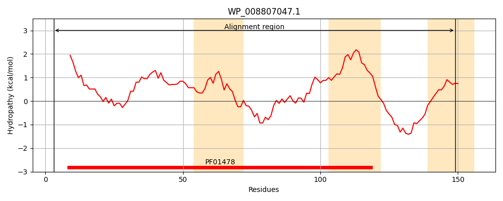
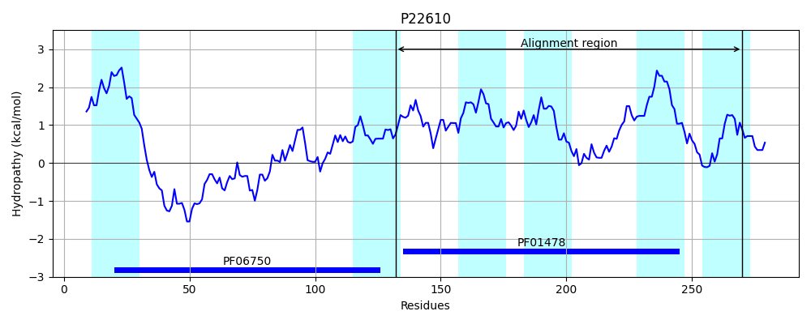

WP_008807047.1
Hit Accession: P22610
Hit TCID: 3.A.15.2.1
Hit Description: gnl|BL_ORD_ID|9408 gnl|TC-DB|P22610|3.A.15.2.1 Type 4 prepilin-like proteins leader peptide processing enzyme (Protein secretion protein XCPA) (PILD protein) [Includes: Leader peptidase (EC 3.4.99.-) (Prepilin peptidase); N-methyltransferase (EC 2.1.1.-)] - Pseudomonas aeruginosa
Mach Len: 147
e:0.000000
Query TMS Count : 3
Hit TMS Count: 6
TMS-Overlap Score: 2.050000
Predicted Substrates:None
BLAST Alignment:
| Protein Hydropathy Plots: | |
|---|---|
|  |  |
Pairwise Alignment-Hydropathy Plot: | |
 | |